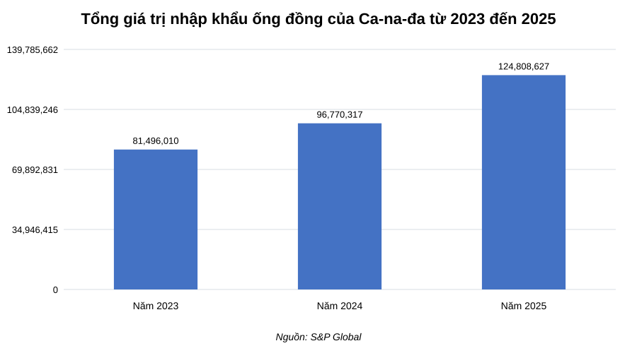
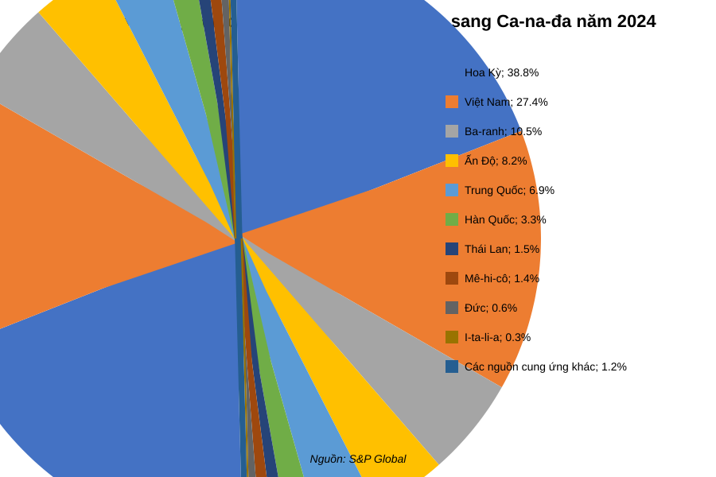
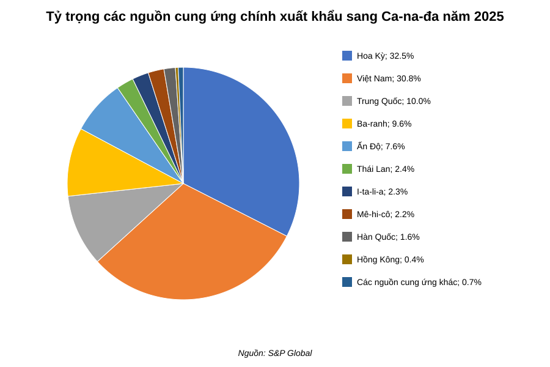
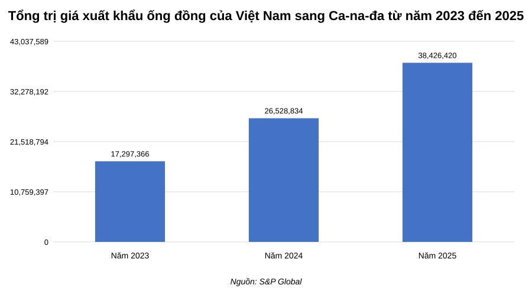
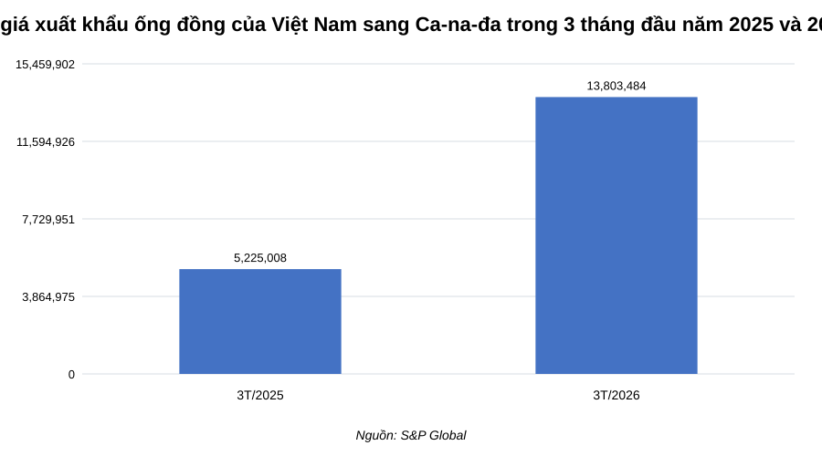

EC chấm dứt điều tra chống bán phá giá đối với sản phẩm nhựa PET của Việt Nam
Ngày 08/5/2026, Ủy ban châu Âu (EC) đã công bố dự kiến chấm dứt vụ điều tra chống bán phá giá đối với sản phẩm nhựa PET của Việt Nam.
Vụ việc được khởi xướng từ tháng 5/2025 đối với sản phẩm polyethylene terephthalate (PET) của Việt Nam xuất khẩu sang EU. Ngày 01 tháng 5 năm 2026, hãng luật O’Connor & Company, đại diện cho PET Europe – nguyên đơn trong vụ việc Liên minh Châu Âu điều tra chống bán phá giá đối với một số sản phẩm nhựa polyethylene terephthalate (PET) có xuất xứ từ Việt Nam – đã gửi thư tới EC thông báo chính thức rút đơn kiện đã nộp. Do nguyên đơn đã rút đơn kiện và EC thấy việc chấm dứt điều tra không gây tổn hại cho EU, vụ việc điều tra dự kiến sẽ được chấm dứt và sản phẩm nhựa PET của Việt Nam sẽ không bị áp dụng biện pháp CBPG khi xuất khẩu sang thị trường EU.
Các bên liên quan có thể gửi ý kiến phản hồi về thông báo này cho EC trước ngày 18/5/2026.
Thông tin chi tiết liên hệ: Phòng Xử lý PVTM nước ngoài, Cục Phòng vệ thương mại, Bộ Công Thương, 54 Hai Bà Trưng, Cửa Nam, Hà Nội. Chuyên viên phụ trách: Nguyễn Việt Hà. Email: hanv@moit.gov.vn; ngocny@moit.gov.vn.
TIN TRONG NƯỚC
Ủy ban thương mại quốc tế Hoa Kỳ (ITC) công bố khuyến nghị về việc áp dụng biện pháp khắc phục trong vụ việc Hoa Kỳ điều tra tự vệ với sản phẩm mặt đá thạch anh (TA-201-79)
Mới đây, Ủy ban thương mại quốc tế Hoa Kỳ (ITC) đã công bố khuyến nghị về việc áp dụng biện pháp khắc phục trong vụ việc Hoa Kỳ điều tra tự vệ với sản phẩm mặt đá thạch anh như sau:
• Áp dụng hạn ngạch thuế quan trong thời hạn 4 năm đối với sản phẩm mặt đá thạch anh (Quartz Surface Products), bao gồm cả đá tấm và đá chế tác nhập khẩu, loại trừ sản phẩm nhập khẩu từ các quốc gia mà Hoa Kỳ đã ký kết hiệp định thương mại tự do. Mức hạn ngạch hàng năm sẽ được phân bổ tiếp theo quý, mỗi quý cho phép sử dụng 25% khối lượng trong hạn ngạch. Mức thuế năm đầu tiên áp dụng đối với hàng hóa nhập khẩu trong hạn ngạch là 25% và ngoài hạn ngạch là 40%. Lượng hạn ngạch được khuyến nghị như sau: 140.000.000 feet vuông (tương đương khoảng 13,01 triệu m2 vuông) trong năm đầu tiên, 159.000.000 feet vuông (tương đương 14,77 triệu m2 vuông) trong năm thứ hai; 164.000.000 feet vuông (tương đương 15,24 triệu m2 vuông) trong năm thứ 3, và 169.000.000 feet vuông (tương đương 15,7 triệu m2 vuông) trong năm thứ 4. Mức thuế, bao gồm cả thuế trong và ngoài hạn ngạch, sẽ được giảm 1% sau mỗi năm. Cụ thể, thuế trong hạn ngạch được giảm xuống 24% vào năm thứ 2, xuống 23% vào năm thứ 3 và xuống 22% vào năm thứ 4. Thuế ngoài hạn ngạch được giảm xuống 39% vào năm thứ 2, xuống 38% vào năm thứ 3 và xuống 37% vào năm thứ 4.
Khối lượng hạn ngạch được xây dựng trên mức cơ sở 154 triệu feet vuông, phân bổ hàng quý, giảm trong năm đầu tiên để giải quyết lượng hàng tồn kho nhập khẩu dư thừa ước tính tích lũy vào năm 2025 và tăng 3% mỗi năm.
Mức thuế nói trên sẽ được áp dụng theo cơ chế de-stacking (tức không áp dụng chồng chéo với nhiều loại thuế bổ sung khác, ngoại trừ thuế chống bán phá giá/ trợ cấp). Như vậy hàng hóa nhập khẩu vẫn có thể bị áp dụng đồng thời thuế tự vệ và thuế chống bán phá giá/ trợ cấp. Sản phẩm nhập khẩu từ Việt Nam dự kiến không được loại trừ khỏi biện pháp hạn ngạch thuế quan nói trên. ITC cũng khuyến nghị xem xét cơ chế chống lẩn tránh từ các nước không bị áp dụng biện pháp.
Vụ việc này được ITC khởi xướng từ ngày 02 tháng 12 năm 2025.
Cục Phòng vệ thương mại thông báo các doanh nghiệp sản xuất, xuất khẩu sản phẩm nói trên để có kế hoạch ứng phó trong trường hợp Hoa Kỳ chính thức áp dụng biện pháp khắc phục đối với sản phẩm này.
Thông tin chi tiết liên hệ: Phòng Xử lý phòng vệ thương mại nước ngoài, Cục Phòng vệ thương mại, Bộ Công Thương, 54 Hai Bà Trưng, Cửa Nam, Hà Nội. Chuyên viên phụ trách: Nguyễn Anh Thơ, email: thona@moit.gov.vn; ngocny@moit.gov.vn.
TIN TRONG NƯỚC
Hoa Kỳ ban hành kết luận sơ bộ trong kỳ rà soát POR20 đối với tôm Việt Nam xuất khẩu sang Hoa Kỳ
Ngày 08/5/2026, Bộ Thương mại Hoa Kỳ (DOC) đã ban hành kết luận sơ bộ trong đợt rà soát hành chính lần thứ 20 (POR20) lệnh áp thuế chống bán phá giá đối với tôm nước ấm đông lạnh của Việt Nam xuất khẩu sang Hoa Kỳ trong giai đoạn từ 01/02/2024 đến 31/01/2025.
Trong đợt rà soát này, có 29 công ty Việt Nam đã kịp thời nộp Hồ sơ đề nghị nhận mức thuế suất riêng rẽ và đã được DOC chấp thuận. 02 công ty trong số 29 công ty trên đã được DOC lựa chọn làm bị đơn bắt buộc.
Theo Kết luận sơ bộ, 02 doanh nghiệp bị đơn bắt buộc được DOC xác định mức thuế CBPG là 6,30%. Một trong 02 doanh nghiệp bị kết luận không cung cấp đầy đủ mô tả đối với một số hóa chất đầu vào để DOC có thể đối chiếu các hóa chất này với giá trị thay thế tương ứng, dẫn tới việc bị áp dụng dữ liệu sẵn có bất lợi đối với một phần chi phí đầu vào. 27 doanh nghiệp còn lại nhận mức thuế suất riêng rẽ là 7,56% - mức thuế bình quân gia quyền của hai doanh nghiệp bị đơn bắt buộc.
Ngoài ra, DOC dự kiến hủy rà soát đối với 08 doanh nghiệp do không có lô hàng thuộc diện xem xét trong kỳ rà soát. Đồng thời, 132 doanh nghiệp không chứng minh được điều kiện hưởng thuế suất riêng rẽ tiếp tục nhận mức thuế suất toàn quốc 25,76%.
Các bên liên quan có thể nộp bình luận cho DOC trong vòng 21 ngày kể từ ngày đăng Công báo Liên bang Hoa Kỳ và ý kiến phản biện (giới hạn ở nội dung bình luận đã đưa ra) trong vòng 05 ngày sau đó. Các bên cũng có thể nộp yêu cầu tổ chức phiên điều trần trong vòng 30 ngày kể từ ngày ban hành Thông báo này trên Công báo Liên bang Hoa Kỳ.
Dự kiến, DOC sẽ ban hành Kết luận cuối cùng của đợt rà soát này trong vòng 120 ngày kể từ ngày ban hành Kết luận sơ bộ, khoảng tháng 11 năm 2026.
Nhằm xử lý hiệu quả vụ việc và đạt kết quả tốt nhất, Cục PVTM khuyến nghị Hiệp hội Chế biến và Xuất khẩu thủy sản Việt Nam (VASEP) và các doanh nghiệp liên quan:
• Hợp tác đầy đủ và toàn diện với DOC trong suốt quá trình vụ việc để tránh bị coi là bất hợp tác và bị áp mức thuế bất lợi.
• Kịp thời nộp bình luận và ý kiến phản biện cần thiết để DOC có thể điều chỉnh mức thuế trong Kết luận cuối cùng theo hướng tích cực hơn.
• Trao đổi và kiến nghị Chính phủ biện pháp hỗ trợ nếu cần thiết.
Thông tin chi tiết liên hệ: Phòng Xử lý phòng vệ thương mại nước ngoài, Cục Phòng vệ thương mại, Bộ Công Thương, 54 Hai Bà Trưng, Cửa Nam, Hà Nội. Chuyên viên phụ trách: Nguyễn Việt Hà, Email: hanv@moit.gov.vn; nganha@moit.gov.vn.
TIN TRONG NƯỚC
Cục Phòng vệ thương mại thông báo về việc tiếp nhận hồ sơ yêu cầu rà soát biện pháp chống bán phá giá đối với một số sản phẩm bột ngọt có xuất xứ từ Cộng hòa In-đô-nê-xi-a và Ma-lai-xi-a
Ngày 02 tháng 7 năm 2025, Bộ Công Thương ban hành Quyết định số 1914/QĐ-BCT về kết quả rà soát cuối kỳ việc áp dụng biện pháp chống bán phá giá đối với một số sản phẩm bột ngọt có xuất xứ từ Cộng hòa In-đô-nê-xi-a và Cộng hòa nhân dân Trung Hoa.
Căn cứ quy định tại Điều 51 Nghị định số 86/2025/NĐ-CP, Cục Phòng vệ thương mại (Cơ quan điều tra) thông báo tiếp nhận hồ sơ rà soát theo yêu cầu của bên liên quan về việc áp dụng thuế chống bán phá giá đối với sản phẩm bột ngọt có xuất xứ từ Cộng hòa In-đô-nê-xi-a và Cộng hòa nhân dân Trung Hoa.
Theo đó, các bên liên quan theo quy định tại Điều 56 Nghị định số 86/2025/NĐ-CP có quyền nộp hồ sơ yêu cầu rà soát. Hồ sơ yêu cầu rà soát phải bao gồm đầy đủ các thông tin tài liệu theo quy định tại khoản 1 Điều 57 Nghị định số 86/2025/NĐ-CP.
Thời hạn Cơ quan điều tra tiếp nhận hồ sơ chậm nhất là ngày 12 tháng 6 năm 2026.
Hồ sơ yêu cầu rà soát đề nghị gửi về Cơ quan điều tra theo địa chỉ dưới đây:
Cục Phòng vệ thương mại – Bộ Công Thương
54 Hai Bà Trưng – phường Cửa Nam – Hà Nội.
Cơ quan điều tra trân trọng thông báo./.
TIN NƯỚC NGOÀI
Tòa án Thương mại Hoa Kỳ bác bỏ một phần chính sách thuế quan của Tổng thống Donal Trump
Ngày 07/5/2026, Tòa án Thương mại Quốc tế Hoa Kỳ (CIT) đã ra phán quyết cho rằng việc chính quyền Tổng thống Donald Trump áp dụng mức thuế tạm thời 10% đối với hàng hóa nhập khẩu toàn cầu theo Mục 122 của Đạo luật Thương mại năm 1974 là không phù hợp với quy định pháp luật. Tuy nhiên, tòa án chỉ đình chỉ áp dụng biện pháp này đối với hai doanh nghiệp nhập khẩu tư nhân và bang Washington, thay vì áp dụng trên phạm vi toàn quốc.
Phán quyết được thông qua với tỷ lệ 2-1 của CIT, cho phép các mức thuế tạm thời vẫn tiếp tục áp dụng đối với phần lớn các nhà nhập khẩu khác trong thời gian chờ kết quả kháng cáo từ phía Chính phủ Hoa Kỳ. Các mức thuế tạm thời dự kiến sẽ hết hiệu lực vào tháng 7/2026.
Theo nhận định của CIT việc Tổng thống Donal Trump viện dẫn Mục 122 của Đạo luật Thương mại năm 1974 để áp thuế quan là chưa phù hợp với phạm vi điều chỉnh của điều luật này. Ngay sau phán quyết của Toàn án Tối cao, Tổng thống Donald Trump đã viện dẫn “theo quy định, Mục 122 cho phép Tổng thống Hoa Kỳ áp dụng mức thuế tối đa 15% trong thời hạn không quá 150 ngày nhằm xử lý tình trạng mất cân bằng nghiêm trọng trong cán cân thanh toán hoặc nguy cơ suy giảm mạnh giá trị đồng USD”. Tuy nhiên, CIT cho rằng các khoản thâm hụt thương mại mà chính quyền Tổng thống Donald Trump viện dẫn không đáp ứng điều kiện để áp dụng cơ chế này.
Vụ kiện được khởi xướng bởi hai doanh nghiệp nhập khẩu là Basic Fun và doanh nghiệp kinh doanh đồ chơi và Burlap & Barrel nhà nhập khẩu gia vị. Các doanh nghiệp này cho rằng việc áp dụng các mức thuế mới là động thái nhằm lẩn tránh phán quyết trước đó của CIT liên quan đến chính sách thuế quan của Tổng thống Donald Trump.
Phát biểu sau phán quyết, Tổng thống Donald Trump chỉ trích quyết định của CIT và cho biết chính phải Hoa Kỳ hiện đang xem xét tiếp tục áp dụng các mức thuế diện rộng đối với các đối tác thương mại lớn thông qua Mục 301 của Đạo luật Thương mại năm 1974, cơ chế điều tra các hành vi thương mại không công bằng. Hiện Hoa Kỳ đang tiến hành ba cuộc điều tra theo Mục 301 và dự kiến hoàn tất trong tháng 7/2026.
Đáng chú ý, CIT đã bác bỏ yêu cầu của liên minh gồm 24 bang, chủ yếu do Đảng Dân chủ lãnh đạo, về việc đình chỉ áp dụng thuế quan trên phạm vi toàn quốc với lý do các bang này không có đủ tư cách pháp lý để yêu cầu áp dụng biện pháp khẩn cấp.
Ông Dave Townsend, đối tác thuộc Nhóm Thương mại quốc tế của hãng luật Dorsey & Whitney nhận định vụ việc nhiều khả năng sẽ tiếp tục được kháng cáo lên Tòa Phúc thẩm Liên bang Hoa Kỳ và có thể tiếp tục được xem xét tại Tòa án Tối cao. Đồng thời, phán quyết hiện nay cũng có thể tạo tiền đề để các doanh nghiệp nhập khẩu khác khởi kiện nhằm yêu cầu hoàn trả các khoản thuế đã nộp theo Mục 122.
Tổng hợp từ reuters.com
TIN NƯỚC NGOÀI
Cô-lôm-bi-a áp thuế chống bán phá giá đối với sản phẩm ống thép hàn nhập khẩu từ Trung Quốc
Ngày 11/5/2026, Bộ Thương mại, Công nghiệp và Du lịch Cô-lôm-bi-a đã ban hành kết luận cuối cùng trong vụ điều tra chống bán phá giá đối với sản phẩm ống thép hàn tròn bằng sắt hoặc thép nhập khẩu từ Trung Quốc. Sản phẩm thuộc phạm vi áp dụng biện pháp là các loại ống thép hàn có tiết diện tròn, được sản xuất từ sắt hoặc thép và sử dụng để bảo vệ cáp điện. Sản phẩm có đường kính danh nghĩa từ 12,7 mm (1/2 inch) đến 152,4 mm (6 inch), thuộc mã HS 7306.30.99.00.
Theo quyết định của cơ quan điều tra, Cô-lôm-bi-a sẽ áp dụng mức giá nhập khẩu tối thiểu (FOB) là 2.126,66 USD/tấn đối với sản phẩm này. Trong trường hợp giá FOB khai báo của hàng nhập khẩu thấp hơn mức giá tối thiểu này, nhà nhập khẩu sẽ phải nộp khoản thuế chống bán phá giá tương ứng với phần chênh lệch, biện pháp chống bán phá giá sẽ có hiệu lực trong thời hạn 5 năm kể từ ngày công bố chính thức trên công báo của Cô-lôm-bi-a.
Tổng hợp từ asianmetal.com
TIN NƯỚC NGOÀI
Hàn Quốc khởi xướng điều tra chống bán phá giá thép thanh hợp kim đặc biệt nhập khẩu từ Trung Quốc
Theo Ủy ban Thương mại Hàn Quốc thuộc Bộ Thương mại, Công nghiệp và Năng lượng, ngày 12/5, Hàn Quốc đã chính thức khởi xướng điều tra nhằm xác định liệu thép thanh hợp kim đặc biệt nhập khẩu từ Trung Quốc có bị bán phá giá hay không, đồng thời xem xét mức độ thiệt hại đối với ngành sản xuất trong nước.
Thép thanh là sản phẩm thép dạng thanh dài. Đối tượng bị điều tra trong vụ việc lần này là thép thanh hợp kim đặc biệt được sản xuất từ thép hợp kim ngoài thép các-bon, sắt hoặc thép không gỉ thông thường. Đây là dòng sản phẩm có giá trị gia tăng cao, được sử dụng rộng rãi trong các ngành công nghiệp như ô tô, hàng không vũ trụ, điện hạt nhân và quốc phòng.
Cuộc điều tra được khởi xướng sau khi hai doanh nghiệp Hàn Quốc là SeAH Besteel và SeAH Changwon Special Steel nộp đơn yêu cầu điều tra chống bán phá giá lên Ủy ban Thương mại vào cuối tháng 2/2026. Hai doanh nghiệp cho rằng lượng thép thanh nhập khẩu giá thấp từ Trung Quốc gia tăng trong thời gian gần đây đang gây áp lực lớn đối với ngành sản xuất nội địa và đề nghị cơ quan chức năng áp dụng biện pháp phòng vệ thương mại.
Kim ngạch nhập khẩu nhóm thép thanh không gỉ và thép hợp kim, bao gồm thép thanh hợp kim đặc biệt, đạt khoảng 648 triệu USD trong năm 2025, trong đó hàng nhập khẩu từ Trung Quốc chiếm khoảng 60,9%, tương đương 395 triệu USD. Mặc dù giá trị nhập khẩu từ Trung Quốc giảm 1,9% so với năm trước, lượng nhập khẩu lại tăng 5,1%, đạt 556.057 tấn.
Trong khi đó, doanh thu của các doanh nghiệp Hàn Quốc trong lĩnh vực này ghi nhận xu hướng suy giảm. Doanh thu nội địa của SeAH Besteel đối với thép thanh hợp kim đặc biệt đã giảm 10,6% trong vòng hai năm, còn khoảng 1,53 nghìn tỷ won (khoảng 1,1 tỷ USD) trong năm 2025. Doanh thu bán thép thanh của SeAH Changwon Special Steel cũng giảm 8,2%, từ khoảng 700 tỷ won năm 2023 xuống còn khoảng 640 tỷ won trong năm 2025.
Thời gian gần đây, Chính phủ Hàn Quốc đang gia tăng điều tra và áp dụng các biện pháp phòng vệ thương mại đối với nhiều sản phẩm thép nhập khẩu từ Trung Quốc. Tháng 9/2025, Bộ Kinh tế và Tài chính Hàn Quốc đã áp thuế chống bán phá giá 21,62% trong thời hạn 5 năm đối với thép tấm không gỉ của Trung Quốc. Tiếp đó, vào tháng 11, Hàn Quốc áp thuế chống bán phá giá lên tới 34,1% đối với thép tấm cán nóng bằng thép carbon và thép hợp kim nhập khẩu từ Trung Quốc.
Hiện nay, Ủy ban Thương mại Hàn Quốc cũng đang tiến hành rà soát lần thứ hai đối với biện pháp chống bán phá giá áp dụng với thép hình chữ H của Trung Quốc, đồng thời điều tra vụ việc liên quan đến thép cán nguội mạ kẽm nhập khẩu từ Trung Quốc.
Theo Seoul Economic Daily
TIN NƯỚC NGOÀI
Hoa Kỳ rà soát thuế chống bán phá giá đối với ống thép hàn nhập khẩu từ Hàn Quốc và Thổ Nhĩ Kỳ
Ủy ban Thương mại Quốc tế Hoa Kỳ (USITC) bắt đầu quá trình rà soát cuối kỳ sau 5 năm áp dụng biện pháp chống bán phá giá áp đối với sản phẩm ống thép hàn nhập khẩu từ Hàn Quốc và Thổ Nhĩ Kỳ, đồng thời rà soát thuế chống trợ cấp đối với cùng sản phẩm nhập khẩu từ Thổ Nhĩ Kỳ.
Cuộc rà soát được thực hiện theo quy định của Đạo luật Thuế quan năm 1930 nhằm đánh giá liệu việc chấm dứt các biện pháp hiện hành có dẫn tới khả năng tiếp diễn hoặc tái diễn thiệt hại đáng kể đối với ngành sản xuất thép nội địa của Hoa Kỳ hay không.
Theo USITC, các biện pháp chống bán phá giá và chống trợ cấp đối với sản phẩm ống thép hàn từ Hàn Quốc và Thổ Nhĩ Kỳ đã được gia hạn lần gần nhất vào năm 2021 sau khi Hoa Kỳ kết luận rằng việc chấm dứt biện pháp sẽ dẫn tới hiện tượng tiếp diễn hoặc tái diễn tình trạng phá giá và thiệt hại cho ngành sản xuất nội địa Hoa Kỳ.
Trong đợt rà soát lần thứ hai, các bên liên quan gồm nhà sản xuất trong nước, nhà nhập khẩu, nhà xuất khẩu và các tổ chức liên quan được yêu cầu nộp ý kiến và dữ liệu cho USITC trước ngày 1/6/2026. Thời hạn nộp ý kiến phản hồi là ngày 13/7/2026.
Hoa Kỳ sẽ xem xét liệu sản phẩm thuộc phạm vi rà soát có được bán vào thị trường Hoa Kỳ với giá thấp hơn giá thông thường hay nhận trợ cấp từ chính phủ nước xuất khẩu, đồng thời đánh giá tác động của hàng nhập khẩu đối với giá cả và hoạt động của ngành sản xuất nội địa.
Các sản phẩm thuộc phạm vi điều tra được phân loại theo mã HTSUS, bao gồm: 7305.11.1030, 7305.11.5000, 7305.12.1030, 7305.12.5000, 7305.19.1030, 7305.19.5000, 7306.19.1010, 7306.19.1050, 7306.19.5110, 7306.19.5150.
Tổng hợp từ Steel Radar
TIN NƯỚC NGOÀI
Ấn Độ gia hạn thuế chống bán phá giá đối với anhydride phthalic
Tổng cục Phòng vệ thương mại Ấn Độ (DGTR) đã khuyến nghị gia hạn biện pháp chống bán phá giá thêm 5 năm đối với mặt hàng anhydride phthalic nhập khẩu từ Trung Quốc và Hàn Quốc, sau khi kết luận rằng việc chấm dứt biện pháp hiện hành có thể dẫn tới nguy cơ tiếp diễn hoặc tái diễn hành vi bán phá giá và thiệt hại đối với ngành sản xuất trong nước.
Kết luận trên được đưa ra sau khi kết thúc cuộc rà soát cuối kỳ đối với biện pháp đã được Ấn Độ áp dụng từ năm 2021. Cuộc rà soát được khởi xướng trên cơ sở đề nghị của các nhà sản xuất nội địa gồm IG Petrochemicals Ltd, Thirumalai Chemical Industries Ltd và TCL Intermediates Pvt Ltd. Các doanh nghiệp này cho rằng hàng nhập khẩu giá rẻ từ Trung Quốc, Hàn Quốc, In-đô-nê-xi-a và Thái Lan đã ảnh hưởng tiêu cực đến hoạt động sản xuất trong nước.
Sau quá trình điều tra, DGTR đề xuất tiếp tục áp dụng thuế chống bán phá giá đối với hàng nhập khẩu từ Trung Quốc và Hàn Quốc, trong khi xác định biên độ thiệt hại đối với hàng nhập khẩu từ Thái Lan ở mức không đáng kể. Mức thuế chống bán phá giá được khuyến nghị duy trì là 40,08 USD/tấn đối với hàng nhập khẩu từ Trung Quốc và 140,17 USD/tấn đối với hàng nhập khẩu từ Hàn Quốc.
Anhydride phthalic là hóa chất công nghiệp quan trọng, được sử dụng trong sản xuất chất hóa dẻo, nhựa, sơn phủ, thuốc nhuộm và chất màu. Sản phẩm này được phân loại theo mã HS 29173500 và chủ yếu được sản xuất thông qua quá trình oxy hóa xúc tác ortho-xylene hoặc naphthalene.
Theo DGTR, mặc dù các doanh nghiệp nội địa đã mở rộng đáng kể công suất sản xuất trong giai đoạn điều tra, khả năng sinh lời vẫn suy giảm do hàng nhập khẩu giá thấp tiếp tục gây áp lực lên giá bán tại thị trường Ấn Độ. Cơ quan này cho rằng việc duy trì biện pháp là cần thiết nhằm bảo đảm tính bền vững lâu dài của ngành sản xuất trong nước.
Tổng hợp từ Chemanalyst.news
THÔNG TIN XUẤT NHẬP KHẨU
Tình hình xuất khẩu mặt hàng ống đồng vào thị trường Ca-na-đa
1. Mô tả mặt hàng ống đồng
Ống đồng (Organic coated steel products) là sản phẩm kim loại màu được sản xuất chủ yếu từ đồng nguyên chất hoặc hợp kim đồng, có dạng hình trụ rỗng với tiết diện tròn, được sử dụng rộng rãi trong nhiều ngành công nghiệp nhờ đặc tính dẫn nhiệt, dẫn điện và chống ăn mòn vượt trội. Tùy theo mục đích sử dụng, ống đồng có thể được sản xuất dưới dạng ống cứng hoặc ống mềm, với nhiều kích thước về đường kính, độ dày và chiều dài khác nhau nhằm đáp ứng yêu cầu kỹ thuật của từng lĩnh vực. Thành phần chính của sản phẩm là đồng tinh luyện có độ tinh khiết cao, thường đạt từ 99,9% trở lên, giúp bảo đảm khả năng truyền nhiệt nhanh, độ bền cơ học ổn định và tuổi thọ sử dụng dài. Trong quá trình sản xuất, đồng được nung chảy, đúc phôi, kéo ống, cán nguội và xử lý nhiệt để tạo ra sản phẩm đạt tiêu chuẩn kỹ thuật quốc tế về độ cứng, độ bền kéo, khả năng chịu áp lực và khả năng chống oxy hóa.
Ống đồng được ứng dụng phổ biến trong ngành điện lạnh, điều hòa không khí và hệ thống làm mát do khả năng dẫn nhiệt cao và chịu được áp suất lớn của môi chất lạnh. Ngoài ra, sản phẩm còn được sử dụng trong ngành xây dựng, hệ thống cấp thoát nước, thiết bị y tế, công nghiệp ô tô, năng lượng tái tạo và sản xuất thiết bị điện tử. Trong lĩnh vực điện lạnh, ống đồng đóng vai trò quan trọng trong việc dẫn gas lạnh giữa các bộ phận của hệ thống điều hòa và tủ lạnh, giúp nâng cao hiệu suất vận hành và tiết kiệm năng lượng. Đối với ngành xây dựng và cấp nước, ống đồng được đánh giá cao nhờ khả năng chống ăn mòn, hạn chế rò rỉ và bảo đảm chất lượng nước sạch trong quá trình sử dụng lâu dài.
Trên thị trường quốc tế, mặt hàng ống đồng thường được phân loại theo mã HS thuộc nhóm sản phẩm đồng và các sản phẩm bằng đồng, phổ biến như HS 7411 đối với ống và ống dẫn bằng đồng. Sản phẩm có thể được chia thành nhiều loại khác nhau như ống đồng tinh luyện, ống đồng hợp kim, ống đồng dạng cuộn, ống đồng thẳng, ống đồng cách nhiệt hoặc ống đồng dùng riêng cho ngành điều hòa không khí. Giá trị thương mại của mặt hàng này phụ thuộc lớn vào biến động giá đồng nguyên liệu trên thị trường thế giới, nhu cầu của ngành xây dựng và điện lạnh, cũng như xu hướng chuyển đổi sang các công nghệ tiết kiệm năng lượng và thân thiện môi trường.
Tại Việt Nam, ngành sản xuất ống đồng đang từng bước phát triển nhằm đáp ứng nhu cầu trong nước và tham gia chuỗi cung ứng toàn cầu. Các doanh nghiệp sản xuất trong nước chủ yếu phục vụ lĩnh vực điện lạnh, điều hòa không khí và thiết bị công nghiệp, đồng thời xuất khẩu sang một số thị trường lớn như Hoa Kỳ, EU, Nhật Bản và ASEAN. Tuy nhiên, đây cũng là mặt hàng có nguy cơ đối mặt với các biện pháp phòng vệ thương mại do đặc điểm cạnh tranh cao, giá trị xuất khẩu tăng nhanh và sự phụ thuộc nhất định vào nguyên liệu nhập khẩu. Vì vậy, việc nâng cao tỷ lệ nội địa hóa, minh bạch nguồn gốc nguyên liệu và đáp ứng tiêu chuẩn kỹ thuật, môi trường của các thị trường nhập khẩu là yếu tố quan trọng giúp doanh nghiệp duy trì năng lực cạnh tranh và hạn chế rủi ro trong hoạt động thương mại quốc tế.
Quy trình sản xuất ống đồng
Quy trình sản xuất ống đồng là quá trình công nghiệp có yêu cầu kỹ thuật cao, bao gồm nhiều công đoạn liên hoàn nhằm tạo ra sản phẩm có độ chính xác lớn về kích thước, khả năng chịu áp lực tốt, bề mặt nhẵn và đáp ứng các tiêu chuẩn kỹ thuật quốc tế. Nguyên liệu đầu vào chủ yếu là đồng cathode tinh luyện hoặc phế liệu đồng đã qua xử lý, có độ tinh khiết cao nhằm bảo đảm tính dẫn nhiệt, dẫn điện và độ bền của sản phẩm cuối cùng. Tùy theo công nghệ sản xuất và mục đích sử dụng, quy trình có thể khác nhau giữa các doanh nghiệp, tuy nhiên nhìn chung bao gồm các công đoạn chính như nấu luyện, đúc phôi, ép đùn, kéo ống, xử lý nhiệt, làm sạch bề mặt, kiểm tra chất lượng và đóng gói thành phẩm.
Ở giai đoạn đầu tiên, nguyên liệu đồng được đưa vào lò nung ở nhiệt độ cao để nấu chảy hoàn toàn. Trong quá trình này, các tạp chất được loại bỏ nhằm nâng cao độ tinh khiết của kim loại nóng chảy. Đồng sau khi nấu luyện sẽ được đúc thành phôi dạng thanh tròn hoặc dạng ống rỗng tùy theo công nghệ sản xuất. Một số nhà máy hiện đại sử dụng công nghệ đúc liên tục nhằm giảm hao hụt nguyên liệu và nâng cao chất lượng phôi. Sau công đoạn đúc, phôi đồng được làm nguội, kiểm tra sơ bộ và chuyển sang công đoạn ép đùn hoặc cán nóng để tạo hình ban đầu cho sản phẩm ống đồng.
Tiếp theo, phôi được đưa qua hệ thống ép đùn hoặc máy xuyên lỗ nhằm tạo thành dạng ống rỗng có kích thước cơ bản. Đây là công đoạn quan trọng quyết định cấu trúc ban đầu của sản phẩm. Sau khi tạo hình sơ bộ, ống đồng tiếp tục được kéo nguội qua nhiều lần bằng hệ thống khuôn kéo chuyên dụng để giảm đường kính, điều chỉnh độ dày thành ống và tăng độ chính xác về kích thước. Trong quá trình kéo nguội, sản phẩm thường được bôi trơn để giảm ma sát và tránh nứt gãy bề mặt. Tùy theo yêu cầu kỹ thuật, ống đồng có thể phải trải qua nhiều chu kỳ kéo liên tiếp để đạt kích thước và độ bền mong muốn.
Sau công đoạn kéo nguội, ống đồng được xử lý nhiệt thông qua quá trình ủ mềm hoặc tôi nhằm khôi phục tính dẻo của vật liệu sau khi bị biến cứng trong quá trình gia công cơ học. Công đoạn này giúp sản phẩm có độ linh hoạt cao hơn, đặc biệt đối với các loại ống đồng dùng trong ngành điện lạnh hoặc điều hòa không khí cần khả năng uốn cong tốt khi lắp đặt. Sau xử lý nhiệt, bề mặt ống được tẩy rửa bằng hóa chất hoặc làm sạch cơ học nhằm loại bỏ dầu mỡ, oxit kim loại và các tạp chất còn sót lại, giúp tăng tính thẩm mỹ và khả năng chống ăn mòn của sản phẩm.
Tiếp đó, sản phẩm được kiểm tra chất lượng nghiêm ngặt thông qua nhiều phương pháp khác nhau như kiểm tra kích thước, độ dày, khả năng chịu áp lực, độ kín khí, độ bền kéo và độ sạch bên trong ống. Một số doanh nghiệp còn áp dụng công nghệ kiểm tra không phá hủy bằng siêu âm hoặc dòng điện xoáy để phát hiện các khuyết tật nhỏ trên bề mặt và bên trong vật liệu. Chỉ những sản phẩm đáp ứng đầy đủ tiêu chuẩn kỹ thuật mới được chuyển sang công đoạn cắt theo chiều dài yêu cầu, cuộn ống hoặc bọc cách nhiệt tùy theo mục đích sử dụng.
Cuối cùng, ống đồng thành phẩm được đóng gói, dán nhãn và bảo quản trong điều kiện phù hợp trước khi phân phối ra thị trường hoặc xuất khẩu. Đối với sản phẩm xuất khẩu, doanh nghiệp thường phải đáp ứng thêm các tiêu chuẩn quốc tế về chất lượng, môi trường và an toàn kỹ thuật như ASTM, JIS, EN hoặc ISO. Trong bối cảnh nhu cầu sử dụng ống đồng ngày càng gia tăng trong các ngành điện lạnh, xây dựng và công nghiệp chế tạo, nhiều doanh nghiệp đã đầu tư dây chuyền sản xuất hiện đại, tự động hóa cao nhằm nâng cao năng suất, tiết kiệm năng lượng và giảm phát thải môi trường. Đồng thời, việc kiểm soát nguồn gốc nguyên liệu và quy trình sản xuất minh bạch cũng trở thành yêu cầu quan trọng nhằm đáp ứng quy định xuất xứ hàng hóa và hạn chế rủi ro liên quan đến các biện pháp phòng vệ thương mại trên thị trường quốc tế.
Thị trường ống đồng của Ca-na-đa và xu hướng
Thị trường ống đồng của Ca-na-đa được đánh giá là một trong những thị trường có nhu cầu ổn định và tiềm năng tăng trưởng tích cực tại khu vực Bắc Mỹ, chủ yếu nhờ sự phát triển của ngành xây dựng, hệ thống HVAC (sưởi ấm, thông gió và điều hòa không khí), điện lạnh và cơ sở hạ tầng năng lượng. Ống đồng được sử dụng rộng rãi trong các công trình dân dụng và công nghiệp tại Ca-na-đa do đặc tính dẫn nhiệt cao, độ bền tốt, khả năng chống ăn mòn và tuổi thọ dài, đặc biệt phù hợp với điều kiện khí hậu lạnh giá và yêu cầu kỹ thuật nghiêm ngặt của quốc gia này. Trong lĩnh vực HVAC và điện lạnh, ống đồng là vật liệu gần như không thể thay thế trong hệ thống dẫn môi chất lạnh, thiết bị trao đổi nhiệt và hệ thống cấp thoát nước chất lượng cao.
Theo một số nghiên cứu thị trường, quy mô thị trường ống và ống dẫn bằng đồng của Ca-na-đa đạt khoảng 204 triệu USD trong năm 2024 và dự kiến có thể tăng lên khoảng 274,6 triệu USD vào năm 2030, với tốc độ tăng trưởng trung bình khoảng 4,1%/năm trong giai đoạn 2025–2030. Trong đó, lĩnh vực HVAC hiện là phân khúc tiêu thụ lớn nhất, trong khi nhu cầu từ ngành điện – điện tử và năng lượng sạch được dự báo sẽ tăng nhanh trong thời gian tới.
Một trong những động lực quan trọng thúc đẩy nhu cầu ống đồng tại Ca-na-đa là xu hướng gia tăng đầu tư xây dựng và nâng cấp cơ sở hạ tầng. Các dự án nhà ở, trung tâm thương mại, bệnh viện, hệ thống năng lượng tái tạo và trung tâm dữ liệu đều làm gia tăng nhu cầu đối với các sản phẩm đồng có khả năng dẫn nhiệt và dẫn điện cao. Bên cạnh đó, Ca-na-đa đang thúc đẩy các tiêu chuẩn công trình xanh và tiết kiệm năng lượng, khiến các hệ thống HVAC hiệu suất cao được sử dụng phổ biến hơn, từ đó kéo theo nhu cầu lớn đối với ống đồng chất lượng cao. Báo cáo về chi phí xây dựng tại Ca-na-đa cho thấy giá vật liệu HVAC và vật liệu ngành nước tăng mạnh trong năm 2025, phản ánh nhu cầu tiêu thụ vẫn ở mức cao trên thị trường.
Về thương mại, Ca-na-đa vừa là quốc gia sản xuất vừa là thị trường nhập khẩu đáng kể đối với các sản phẩm đồng và ống đồng. Nguồn cung nhập khẩu chủ yếu đến từ United States, China và một số quốc gia châu Á khác. Dữ liệu thương mại cho thấy Ca-na-đa nhập khẩu lượng lớn sản phẩm “copper tubes and pipes” và “copper tube or pipe fittings”, trong đó riêng nhập khẩu các sản phẩm đồng từ Hoa Kỳ đạt giá trị hàng tỷ USD trong năm 2025. Đồng thời, xu hướng tăng trưởng nhập khẩu ống đồng trong giai đoạn gần đây phản ánh nhu cầu nội địa tiếp tục mở rộng, đặc biệt trong các ngành xây dựng và công nghiệp chế tạo.
Xu hướng thị trường trong thời gian tới cho thấy nhu cầu ống đồng tại Ca-na-đa sẽ tiếp tục tăng nhờ quá trình điện khí hóa nền kinh tế, mở rộng hạ tầng năng lượng sạch và phát triển trung tâm dữ liệu phục vụ trí tuệ nhân tạo. Đồng là kim loại chiến lược trong quá trình chuyển đổi năng lượng vì được sử dụng rộng rãi trong lưới điện, hệ thống truyền tải, xe điện và các thiết bị điện công nghiệp. Nhiều phân tích thị trường nhận định nhu cầu đồng toàn cầu sẽ tiếp tục tăng mạnh trong dài hạn, trong khi nguồn cung có nguy cơ thiếu hụt do thời gian phát triển mỏ kéo dài và chi phí khai thác ngày càng cao. Điều này có thể khiến giá nguyên liệu đồng biến động mạnh, tác động trực tiếp đến giá thành và thương mại sản phẩm ống đồng tại Ca-na-đa.
Ngoài ra, xu hướng bảo hộ thương mại và tái cấu trúc chuỗi cung ứng tại Bắc Mỹ cũng đang ảnh hưởng đáng kể đến thị trường này. Hoa Kỳ đã áp dụng các biện pháp thuế quan đối với một số sản phẩm đồng bán thành phẩm nhập khẩu, bao gồm cả ống đồng, nhằm thúc đẩy sản xuất nội địa và bảo đảm an ninh chuỗi cung ứng. Điều này có thể làm thay đổi dòng chảy thương mại trong khu vực Bắc Mỹ, đồng thời tạo ra cơ hội cho các nhà cung cấp từ Ca-na-đa và các quốc gia có quan hệ thương mại thuận lợi với khu vực này.
Đối với các doanh nghiệp xuất khẩu ống đồng của Việt Nam, thị trường Ca-na-đa được đánh giá là có tiềm năng nhờ nhu cầu ổn định, mức độ nhập khẩu cao và cam kết mở cửa thương mại trong khuôn khổ các hiệp định thương mại tự do. Tuy nhiên, doanh nghiệp cũng cần lưu ý các yêu cầu nghiêm ngặt về tiêu chuẩn kỹ thuật, chất lượng sản phẩm, môi trường và xuất xứ hàng hóa. Trong bối cảnh xu hướng bảo hộ thương mại gia tăng tại Bắc Mỹ, việc minh bạch nguồn gốc nguyên liệu, nâng cao tỷ lệ nội địa hóa và xây dựng hệ thống dữ liệu sản xuất đầy đủ sẽ là yếu tố quan trọng giúp doanh nghiệp Việt Nam nâng cao khả năng cạnh tranh và hạn chế rủi ro liên quan đến các biện pháp phòng vệ thương mại.
THÔNG TIN XUẤT NHẬP KHẨU
Tình hình xuất khẩu mặt hàng ống đồng vào thị trường Ca-na-đa — tiếp
2. Tình hình xuất khẩu ống đồng từ các nguồn trên thế giới sang thị trường Ca-na-đa
Năm 2023, tổng kim ngạch xuất khẩu ống đồng từ tất cả nguồn trên thế giới sang Ca-na-đa đạt 81,5 triệu USD, trong đó Hoa Kỳ là nhà cung cấp lớn nhất, tiếp theo là các thị trường như Việt Nam, Ấn Độ, Trung Quốc và Ba-ranh. Trong năm 2024, kim ngạch xuất khẩu mặt hàng này có sự gia tăng 18,7% so với năm 2023 đạt 96,8 triệu USD. Năm 2025, kim ngạch xuất khẩu từ sang Ca-na-đa tiếp tục tăng 29%, đạt 124,8 triệu USD.
Nhìn chung, trong giai đoạn 2023–2025, xuất khẩu ống đồng sang Ca-na-đa tiếp tục duy trì xu hướng tăng trưởng nhờ nhu cầu ổn định của thị trường và vai trò ngày càng quan trọng của đồng trong quá trình chuyển đổi năng lượng và phát triển hạ tầng công nghệ. Hoa Kỳ, Việt Nam và Trung Quốc vẫn là những nguồn cung chủ đạo. Trong thời gian tới, xu hướng đa dạng hóa chuỗi cung ứng, yêu cầu tiêu chuẩn môi trường cao hơn và nguy cơ gia tăng các biện pháp phòng vệ thương mại sẽ tiếp tục là những yếu tố tác động mạnh đến hoạt động xuất khẩu ống đồng vào thị trường Ca-na-đa.

Nguồn: S&P Global
Năm 2024, Hoa Kỳ là nguồn cung cấp có trị giá xuất khẩu ống đồng lớn nhất sang thị trường Ca-na-đa, đạt 37,5 triệu USD, chiếm 38,8% tổng kim ngạch nhập khẩu sản phẩm cùng loại của Ca-na-đa. Việt Nam xếp thứ hai với trị giá xuất khẩu đạt 26,5 triệu USD, chiếm 27,4% tổng kim ngạch nhập khẩu sản phẩm cùng loại của Ca-na-đa. Ba-ranh xếp thứ ba với trị giá xuất khẩu đạt 10,1 triệu USD, chiếm 10,5% tổng kim ngạch nhập khẩu sản phẩm cùng loại của Ca-na-đa. Ấn Độ, Trung Quốc và Hàn Quốc lần lượt xếp thứ tư, thứ năm và thứ sáu các nguồn cung ứng ống đồng vào Ca-na-đa với trị giá xuất khẩu đạt 7,9 triệu USD, 6,7 triệu USD và 3,2 triệu USD. Tổng trị giá xuất khẩu ống đồng của mười nguồn cung ứng chính sang thị trường Ca-na-đa đạt 95,6 triệu USD, chiếm 98,8% tổng kim ngạch nhập khẩu sản phẩm cùng loại của Ca-na-đa. Tổng trị giá xuất khẩu ống đồng của các nguồn cung ứng khác đạt 1,2 triệu USD, chiếm 1,2% tổng kim ngạch nhập khẩu sản phẩm cùng loại của EU.
Năm 2025, Hoa Kỳ là nguồn cung cấp có trị giá xuất khẩu ống đồng lớn nhất sang thị trường Ca-na-đa, đạt 40,5 triệu USD, chiếm 32,5% tổng kim ngạch nhập khẩu sản phẩm cùng loại của Ca-na-đa. Việt Nam tiếp tục xếp thứ hai với trị giá xuất khẩu tăng 44,8%, đạt 38,4 triệu USD, chiếm 30,8% tổng kim ngạch nhập khẩu sản phẩm cùng loại của Ca-na-đa. Trung Quốc xếp thứ ba với trị giá xuất khẩu đạt 12,4 triệu USD, chiếm 10% tổng kim ngạch nhập khẩu sản phẩm cùng loại của Ca-na-đa. Ba-ranh, Ấn Độ và Thái Lan lần lượt xếp thứ tư, thứ năm và thứ sáu với trị giá xuất khẩu đạt 11,9 triệu USD, 9,5 triệu USD và 3 triệu USD. Tổng trị giá xuất khẩu ống đồng của mười nguồn cung ứng sang thị trường Ca-na-đa đạt 123,9 triệu USD, chiếm 99,3% tổng kim ngạch nhập khẩu sản phầm cùng loại của Ca-na-đa. Tổng trị giá xuất khẩu ống đồng của các nguồn cung ứng khác đạt 885 nghìn USD, chiếm 0,7% tổng kim ngạch nhập khẩu sản phẩm cùng loại của Ca-na-đa.
Các nguồn cung ứng chính sang thị trường Ca-na-đa năm 2024 và 2025
Đơn vị: USD
Nguồn cung ứng vào Ca-na-đa
Trị giá NK năm 2024
Trị giá NK năm 2025
2025 so với 2024
Tỷ trọng năm 2024
Tỷ trọng năm 2025
Hoa Kỳ
37.516.090
40.549.047
8,1%
38,8%
32,5%
Việt Nam
26.528.834
38.426.420
44,8%
27,4%
30,8%
Trung Quốc
6.700.813
12.449.010
85,8%
6,9%
10,0%
Ba-ranh
10.118.228
11.921.323
17,8%
10,5%
9,6%
Ấn Độ
7.908.301
9.493.311
20,0%
8,2%
7,6%
Thái Lan
1.430.346
3.004.577
110,1%
1,5%
2,4%
I-ta-li-a
335.153
2.862.498
754,1%
0,3%
2,3%
Mê-hi-cô
1.309.096
2.753.612
110,3%
1,4%
2,2%
Hàn Quốc
3.154.575
1.981.880
-37,2%
3,3%
1,6%
Hồng Kông
165.606
481.646
190,8%
0,2%
0,4%
Nguồn: S&P Global
Trong 3 tháng đầu năm 2026, tổng kim ngạch nhập khẩu ống đồng của Ca-na-đa tăng 13,4% so với cùng kỳ năm trước đó, đạt gần 36 triệu USD. Việt Nam là nguồn cung cấp ống đồng lớn nhất sang thị trường Ca-na-đa với kim ngạch xuất khẩu tăng mạnh 164,2% so với cùng kỳ năm trước, đạt 13,8 triệu USD, chiếm 38,3% tổng kim ngạch nhập khẩu sản phẩm cùng loại của Ca-na-đa. Hoa Kỳ xếp thứ hai trong số các nguồn cung ứng lớn ống đồng sang thị trường Ca-na-đa với kim ngạch xuất khẩu đạt 10,9 triệu USD, chiếm 30,3% tổng kim ngạch nhập khẩu sản phẩm cùng loại của Ca-na-đa. Trung Quốc xếp thứ ba trong số các nguồn cung ứng lớn ống đồng sang thị trường Ca-na-đa với kim ngạch xuất khẩu đạt 4,1 triệu USD, chiếm 11,4% tổng kim ngạch nhập khẩu sản phẩm cùng loại của Ca-na-đa. Ấn Độ, Hồng Kông và Mê-hi-cô lần lượt xếp thứ tư, thứ năm và thứ sáu với trị giá xuất khẩu đạt 3,1 triệu USD, 1,1 triệu USD và 1 triệu USD.
Các nguồn cung ứng chính sang thị trường Ca-na-đa trong 3 tháng đầu năm 2025 và 2026
Đơn vị: USD
Nguồn cung ứng vào Ca-na-đa
Trị giá NK 3 tháng/2025
Trị giá NK 3 tháng/2026
3T/2026 so với 3T/2025
Tỷ trọng 2026
Việt Nam
5.225.008
13.803.484
164,2%
38,3%
Hoa Kỳ
14.383.541
10.895.366
-24,3%
30,3%
Trung Quốc
2.695.889
4.107.385
52,4%
11,4%
Ấn Độ
2.626.978
3.110.293
18,4%
8,6%
Hồng Kông
299.672
1.077.881
259,7%
3,0%
Mê-hi-cô
750.612
1.059.213
41,1%
2,9%
I-ta-li-a
163.658
980.229
499,0%
2,7%
Hàn Quốc
578.077
385.755
-33,3%
1,1%
Ba-ranh
4.379.154
258.395
-94,1%
0,7%
Đức
68.708
87.597
27,5%
0,2%
Nguồn: S&P Global

Nguồn: S&P Global

Nguồn: S&P Global
THÔNG TIN XUẤT NHẬP KHẨU
Tình hình xuất khẩu mặt hàng ống đồng vào thị trường Ca-na-đa — tiếp
3. Tình hình xuất khẩu ống đồng của Việt Nam sang thị trường Ca-na-đa
Năm 2023, trị giá xuất khẩu mặt hàng ống đồng của Việt Nam đạt 17,3 triệu USD, chiếm 21,2% tổng kim ngạch nhập khẩu mặt hàng ống đồng của Ca-na-đa. Năm 2024, trị giá xuất khẩu mặt hàng này của Việt Nam tăng 53,4%, đạt 26,5 triệu USD, chiếm 27,4% tổng kim ngạch nhập khẩu mặt hàng cùng loại của Ca-na-đa. Năm 2025, tổng kim ngạch xuất khẩu mặt hàng ống đồng của Việt Nam tiếp tục tăng 44,8% so với năm trước đó, đạt 38,4 triệu USD, chiếm 30,8% tổng kim ngạch nhập khẩu mặt hàng này của Ca-na-đa. Trong giai đoạn từ năm 2024-2025, Việt Nam xếp thứ hai trong số các nguồn cung cấp ống đồng sang thị trường Ca-na-đa.

Nguồn: S&P Global
Trong 3 tháng đầu năm 2025, trị giá xuất khẩu ống đồng của Việt Nam sang thị trường Ca-na-đa đạt 5,2 triệu USD, chiếm 16,5% tổng kim ngạch nhập khẩu sản phẩm cùng loại của Ca-na-đa. Việt Nam xếp thứ hai trong số các nguồn cung có trị giá xuất khẩu ống đồng lớn nhất sang thị trường Ca-na-đa. Trong 3 tháng đầu năm 2026, trị giá xuất khẩu ống đồng của Việt tăng mạnh 164,2% so với cùng kỳ năm trước, đạt 36 triệu USD, chiếm 38,3% tổng kim ngạch nhập khẩu sản phẩm cùng loại của Ca-na-đa. Việt Nam là nguồn cung có trị giá xuất khẩu ống đồng lớn nhất sang thị trường Ca-na-đa.

Nguồn: S&P Global
THÔNG TIN XUẤT NHẬP KHẨU
Tình hình xuất khẩu mặt hàng ống đồng vào thị trường Ca-na-đa — tiếp
4. Cảnh báo và khuyến nghị
Ca-na-đa đã áp dụng thuế chống bán phá giá đối với sản phẩm ống đồng nhập khẩu từ Trung Quốc, Hàn Quốc, Mê-hi-cô, Bra-xin và Hy Lạp.
Với kim ngạch tăng nhanh và có tỷ trọng đáng kể, các doanh nghiệp xuất khẩu cần lưu ý khả năng Ca-na-đa khởi xướng điều tra phòng vệ thương mại đối với mặt hàng này của Việt Nam trong thời gian tới.
Do vậy, doanh nghiệp xuất khẩu ống đồng của Việt Nam cần chủ động xây dựng chiến lược phòng ngừa và ứng phó với các biện pháp phòng vệ thương mại ngay từ sớm. Trước hết, doanh nghiệp cần kiểm soát chặt chẽ nguồn nguyên liệu đầu vào, ưu tiên nâng cao tỷ lệ nội địa hóa và hạn chế phụ thuộc quá lớn vào nguyên liệu từ các quốc gia đang bị áp dụng biện pháp phòng vệ thương mại. Việc đầu tư vào công đoạn sản xuất cốt lõi, gia tăng giá trị gia tăng thực chất tại Việt Nam và chứng minh năng lực sản xuất độc lập sẽ giúp giảm nguy cơ bị nghi ngờ lẩn tránh thuế hoặc gia công đơn giản.
Bên cạnh đó, doanh nghiệp cần xây dựng hệ thống quản trị dữ liệu minh bạch và đầy đủ, bao gồm hồ sơ kế toán, chứng từ nhập khẩu nguyên liệu, định mức sản xuất, chi phí sản xuất và dữ liệu xuất khẩu. Đây là cơ sở quan trọng để chứng minh tính hợp pháp của hoạt động thương mại khi bị cơ quan điều tra yêu cầu cung cấp thông tin. Trong trường hợp bị điều tra, doanh nghiệp cần hợp tác đầy đủ, đúng thời hạn và chính xác với cơ quan điều tra Ca-na-đa nhằm tránh bị áp dụng mức thuế bất lợi do không hợp tác. Việc chủ động thuê tư vấn pháp lý quốc tế, phối hợp với hiệp hội ngành hàng và cơ quan quản lý nhà nước của Việt Nam cũng là yếu tố cần thiết nhằm nâng cao khả năng ứng phó trong các vụ việc phòng vệ thương mại.
Ngoài ra, doanh nghiệp cần thường xuyên theo dõi diễn biến nhập khẩu của thị trường Canada, xu hướng điều tra phòng vệ thương mại đối với ngành kim loại và sản phẩm đồng tại Bắc Mỹ, cũng như các thay đổi về tiêu chuẩn kỹ thuật, môi trường và chính sách thương mại và cập nhật các cảnh báo sớm từ Cục Phòng vệ thương mại.
Việc đa dạng hóa thị trường xuất khẩu, tránh phụ thuộc quá lớn vào một thị trường duy nhất và phát triển các dòng sản phẩm có chất lượng cao, giá trị gia tăng lớn sẽ giúp doanh nghiệp giảm thiểu rủi ro thương mại trong dài hạn. Đồng thời, doanh nghiệp cũng nên chú trọng xây dựng thương hiệu, nâng cao tiêu chuẩn sản xuất xanh và đáp ứng các yêu cầu phát triển bền vững, bởi đây đang trở thành xu hướng quan trọng trong chính sách nhập khẩu của Canada và nhiều quốc gia phát triển.
Nhìn chung, mặc dù thị trường Ca-na-đa còn nhiều tiềm năng đối với mặt hàng ống đồng của Việt Nam nhờ nhu cầu nhập khẩu ổn định và các ưu đãi từ các hiệp định thương mại tự do, song nguy cơ bị áp dụng các biện pháp phòng vệ thương mại trong thời gian tới là không thể xem nhẹ. Do đó, doanh nghiệp cần chuyển từ tư duy ứng phó bị động sang chủ động phòng ngừa rủi ro, nâng cao tính minh bạch trong sản xuất – xuất khẩu và tăng cường năng lực cạnh tranh thực chất nhằm duy trì sự phát triển bền vững tại thị trường Ca-na-đa.
 BỘ CÔNG THƯƠNG
BỘ CÔNG THƯƠNG